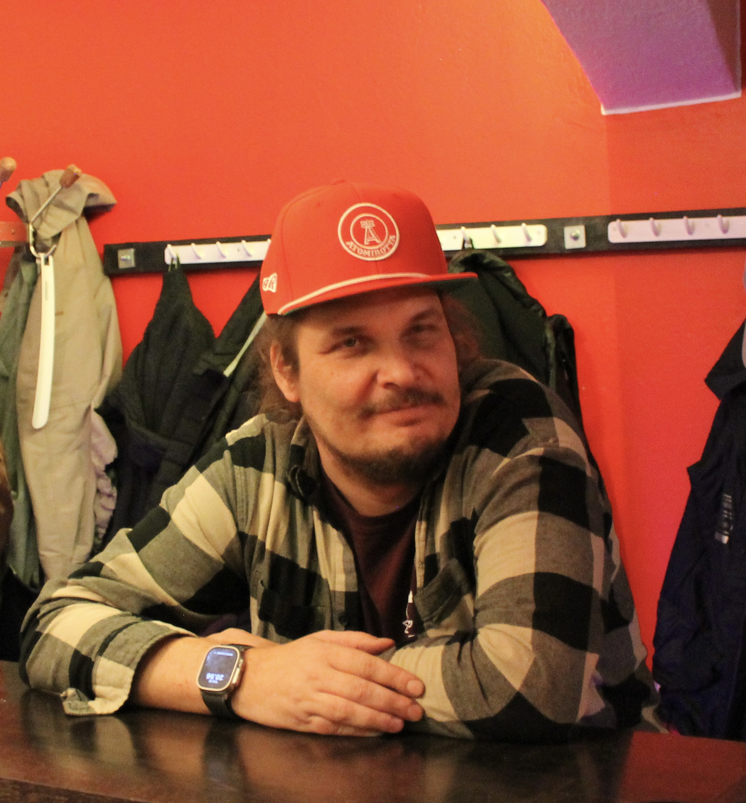
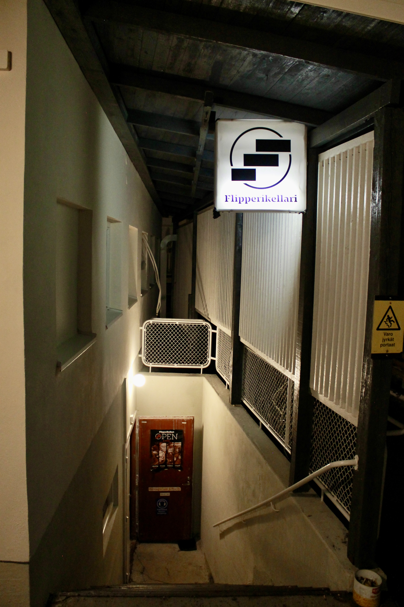

Päätoimittajalta
Joni Hammar
10.5.2023
Kirjoitettu
10.5.2023
Lukuaika
5min

Käpylässä kolisee
Käpylän herttaiseen puutalonaapurustoon voisi tulla ulkomailta asti ihmettelemään sen urbaania seesteisyyttä, mutta itseni alueelle toi tieto uudesta pelihallista. Kyseessä on Flipperikellari. Pohjolankadun Alepan alakerrassa lymyilevän pelihallin tunnelma on omiaan vanhaa henkeä hohkaavassa kellaritilassa, joka on lastattu täyteen vanhoja ja uusia flippereitä. Ihmiset ovat hilpeällä päällä ja pelit kilisevät koko illan. Tilassa on lukemattomien pelien lisäksi tyylikkäät lorvailutilat, joissa kelpaa pitää luovaa taukoa.
Flipperihalli on jokseenkin nostalginen jo käsitteenä, josta mieleen tulevat vanhemmat amerikkalaiset elokuvat, tai sitten Linnanmäen arcade. Pelihalliin kuitenkin liittyy eksotiikkaa, sillä flipperinpeluu ole kovin arkinen rilluttelun muoto, eikä koneita, saati pelihalleja löydy joka kulman takaa. Pelihallin perusti yhdessä neljä flipperiharrastajaa; Mika Marttinen, Juha Viitanen, Arsi Rosenberg ja Erno Lahdenperä, joka antoi Virginialle haastattelun hallista.
"Joo meitä on neljä jätkää tässä mukana. Mika Marttinen, jolla on Mikkelissä myös hieno halli. Hän operoi Helsingissä ja Lahdessa myös,(mitä se siellä?) mahtavaa, että se on tässäkin mukana. Sitten on myös tuo Viitasen Juha. Ennen kun meillä oli tätä omaa hallia me järjestettiin Suomenmestaruuskisat 2016 ja sitten Euroopanmestaruuskisat 2017. Ja Juha on juuri niiden ensimmäisten meidän järjestämien SM kisojen voittaja. Haarajoen miehiä."
"Arsi on tässä paikallinen jäbä, joka bongasi sitten tämän tilan. Jossain Käpylän Facebook-ryhmässä oli vuokrausilmoitus ja sitten kun käytiin katsomassa todettiin, että aivan täydellinen tähän meidän tarkoitukseen, sekä sijainniltaan että kooltaan. Itse olin ajatellut, että jonkun 50 neliöisen tilan voisi löytää jostain, ja sitten tämä oli aivan älytöntä, että löydettiin tämmöinen tila mihin mahtuu heittämällä kaikki pelit ja muutama lisääkin.“
"Se on juuri yhteisöllisyys ja pelin fyysisyys"
“Me kaikki ollaan harrastettu ja kisattu useita vuosia samoissa kisoissa, ja Helsingistä on puuttunut minun mielestä tällainen julkinen pelihalli. Helsingissä on kanssa muutama hieno halli, mutta yksi niistä on yksityinen, eli se on auki vaan sitten isompien kisojen aikaan isommalle yleisölle, ja sitten toinen on Apollonkadun Extraball, josta mullakin alkoi koko harrastus. Se on taas auki enemmän lauantaisin ja suunnilleen kerran kuussa. Tällainen paikka taas, missä pääsisi kuka tahansa harrastamaan ja pelaamaan säännöllisesti on puuttunut Helsingistä ja tavallaan kiinnosti senkin takia lähteä mukaan.”
“Sitten meillä kaikilla on kerääntynyt koneita, mutta ei paikkaa mihin niitä laittaisi. Minullakin on seissyt jossain varaston nurkassa nuo käyttämättömänä vuosia ja nyt sai vihdoinkin paikan missä niitä pääsee pelaamaan ja missä ne saavat olla päällä."
Flipperien suosio on kasvanut viime vuosina, ja voidaan jopa sanoa flipperien tehneen paluun lp-levyjen tavoin. Eerolla on pitkän aikavälin kokemus flippereiden menosta ja tulosta.
“Oman urani aikana flipperien suosio on julkisissa paikoissa kasvanut aivan älyttömästi. Silloin kun aloitin niin oli tosi hiljaista oikeastaan missään julkisissa paikoissa, 2013 suunnilleen. Nämä muut jäbät taas, jotka oli harrastanut pitkin 2000-2010 kertovat harrastamisen tapahtuneen silloin käytännössä pelkästään yksityisissä pelihalleissa, mutta nythän flipperit on kasvaneet baareissa.”
Vanhoilla hiteillä on tapana nousta uudelleen pinnalle ja jopa c-kasetit - aikamoiset konkelit - ovat tehneet vahvaa paluuta aivan viime vuosien aikana. Mutta mikä flippereissä viehättää?
“Se pelin käyttäytyminen; fyysisyys ja ennalta arvaamattomuus, sillä sitä ei voi täysin hallita. Vaikka jos on saman merkkinen tai sama kone, mutta eri yksilö niin se on aivan erilainen pelata, sillä kaikki vaikuttaa. Sama konekin muuttuu täysin, jos sitä siirtää paikasta toiseen, koska kulmat muuttuvat vähän ja samalla pelin käyttäytyminen. Ei simulaatiolla vielä ainakaan päästä lähellekään sitä."
Eli pelin fyysisyys ja itselleni flipperi yhteisö on ollut iso juttu. Kisoja kiertäessäni on kisoissa ollut samat porukat, jotka on kiinnostuneita samasta. Se on tosi iso asia kanssa, mikä on ollut mahtavaa. Ulkomailla kun tulee käytyä kisaamassa - aika paljon tai jonkin verran - tapaa aina tyyppejä ja alkaa olemaan jo tuttuja ulkomaillakin. Eli se on juuri yhteisöllisyys ja pelin fyysisyys, minkä takia nimenomaan flipperin pelaaminen kiinnostaa, eikä niinkään arcademasiinat muutamaa peliä pidemmälle.”
Lue kaikki flipperikellarista!
"mieleen tulevat vanhemmat amerikkalaiset elokuvat"
Erno Lahdenperä, yksi neljästä isännästä.  
 Pelien kilinä ja herralliset isännät tervehtivät sisään astuessa.
Pelien kilinä ja herralliset isännät tervehtivät sisään astuessa.